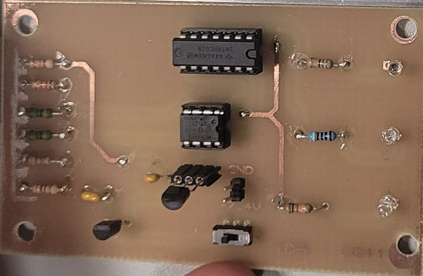

Électronique — BUT GEII 1ère année
Thermomètre de Bain Bébé
Composants utilisés
Dans le cadre de ma première année de BUT GEII, j'ai conçu en groupe de quatre une carte électronique faisant office de thermomètre de bain pour bébé. L'objectif était de concevoir un système capable d'indiquer visuellement si la température de l'eau est trop froide, idéale ou trop chaude, à l'aide de trois LEDs colorées.
La carte mesure la température de l'eau du bain et indique visuellement si elle est adaptée à un bébé : une LED bleue s'allume si l'eau est trop froide, une LED verte si la température est idéale, et une LED rouge si elle est trop chaude. La carte fonctionne grâce à quatre blocs fonctionnels. Le bloc alimentation fournit une tension stabilisée à l'ensemble du circuit via une batterie et un régulateur. Le bloc acquisition mesure la température de l'eau et génère deux seuils de référence : un seuil chaud et un seuil froid. Le bloc traitement compare en permanence la température mesurée à ces deux seuils afin de déterminer dans quelle zone se situe la température. Enfin, le bloc action allume la LED correspondante en fonction du résultat.
Ce projet m'a permis d'approfondir l'utilisation des amplificateurs opérationnels en mode comparateur, la logique combinatoire appliquée à un système réel, et la conception d'une chaîne de mesure complète allant du capteur jusqu'à l'actionneur.
← Retour aux projets